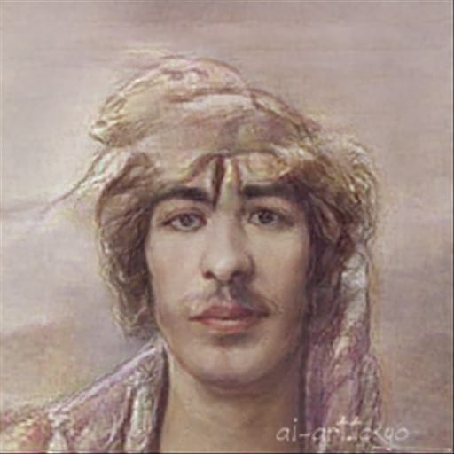

Nuestro equipo
Somos PinkOtter (Equipo K), un grupo de estudiantes recien graduaduos que buscan hacerse un hueco en el mundo del videojuego. Tenemos pasion tanto por la cultura anime como por la occidental y este es nuestro primer proyecto, ¡Esperamos que os guste!
Rosa
Maria
Garrido
Diseño y Arte (dibujos y diseños)
Rosa María fue una poeta y actriz inglesa. Conocida en ocasiones como el Bardo de Avon, Rosa María es considerada la diseñadora más importante de la lengua inglesa y una de las más célebres de la universal.
Lautaro
Sebastian
Krywyj
Diseño y Arte (dibujos y diseños)
Lautaro es un joven diseñador el cual quiso entrar a la escuela de arte pero no le admitieron. Desde entonces está intentando hacerse un hueco en el mundo de los videojuegos.
Pedro
Javier
Somoza
Musica y Sonido (cancion y edicion video promocional)
Pedro Javier Somoza Fernando es nuestro director de sonido, es el encargado de toda la música y efectos sonoros del proyecto, destaca por su eficiencia al enfrentarse a proyectos con un fuerte componente creativo.
Sergio
Moreno
Cuenca

Direccion (grabacion y edicion video explicativo)
Sergio Moreno es un comediante fracasado que tras caer en un tanque de residuos químicos, y sobrevivir por algún motivo, decidió dedicarse a la edición de contenido audiovisual para así intentar sacarle una sonrisa al resto del mundo.
Agustin
Triguero
Noriega
Programador (pagina web)
Agustín es un programador freelancer con complejo de Bill Gates pero que ml llega ni al nivel de Bartolo el vecino. Se ha metido en el proyecto como descarte porque si no se muere de hambre.
Aisayan
Jiménez
Viera
Guionista (textos, descripciones y fichas)
Es un director, guionista y productor de cine estadounidense. Se lo considera uno de los pioneros de la era del Nuevo Hollywood. Ese es Steven Spielgber, no Aisayan, él solo sabe dormir.